Domingos a las 11:00 en Lo Espejo
“El que no ama, no ha conocido a Dios; porque Dios es amor.”1 Juan 4:8
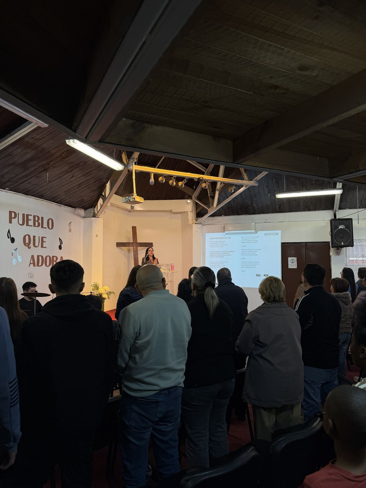
En la Iglesia Evangélica Reformada de Lo Espejo compartimos la vida en comunidad: desde niños y jóvenes hasta personas mayores, todos cantamos, oramos y nos apoyamos semana a semana.
Si es tu primera vez, ven tal como eres. No hay códigos de vestimenta ni formalismos; llega unos minutos antes y te recibiremos con gusto.
Ver horarios“Esta casa también es tuya. Hay un lugar en la mesa para ti y tu familia, y vamos a caminar contigo.”Tus pastores
Queremos estar cerca de ti. Si necesitas oración, quieres saber más de la iglesia o simplemente conversar, escríbenos a nuestro Instagram o pásanos a saludar al finalizar el culto. ¡Los pastores estamos para acompañarte!
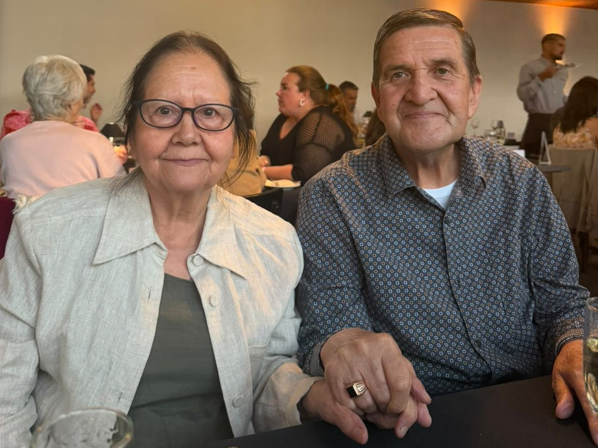
Así se vive el culto: música, oración y la Palabra.
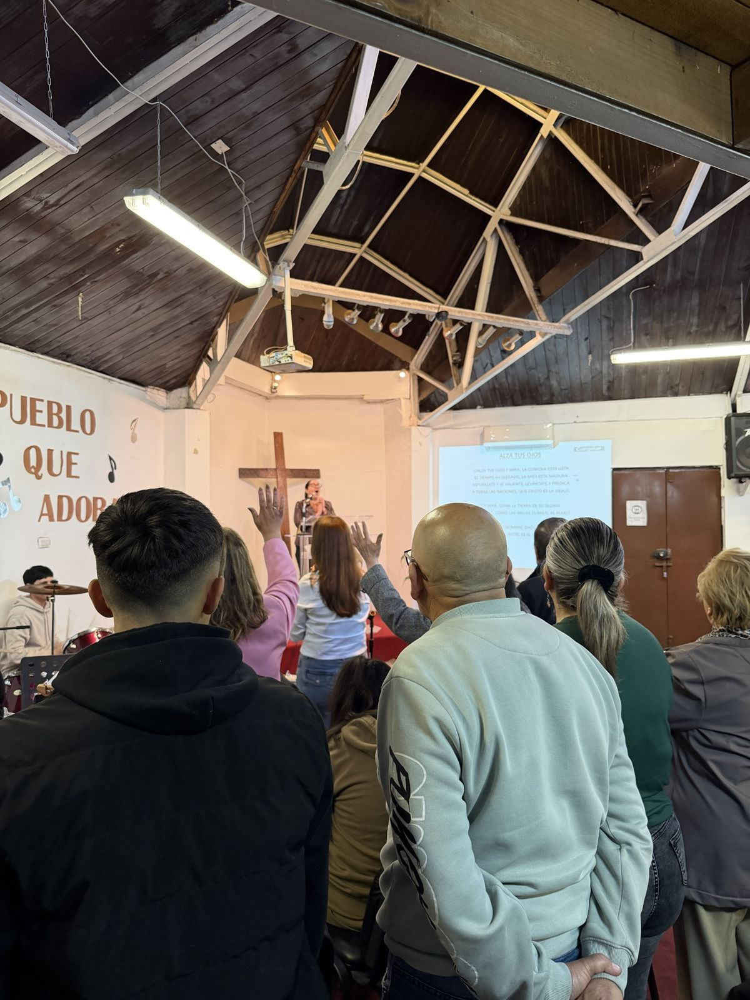
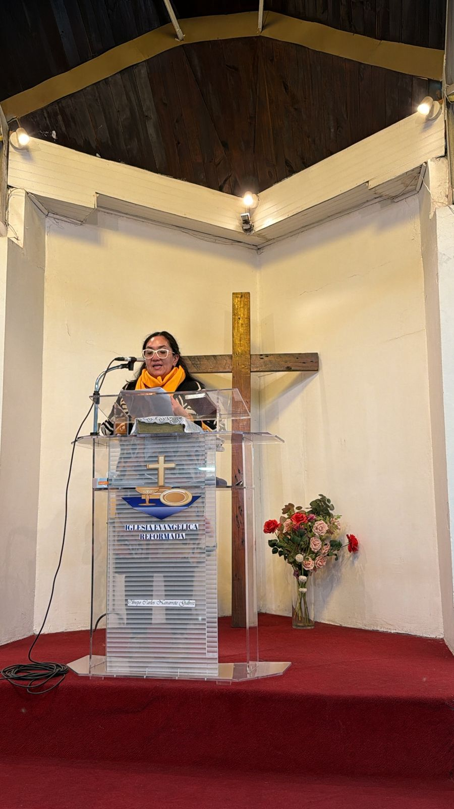
Creemos que la Iglesia no es un edificio, sino una familia unida por la fe en Jesucristo, llamada a caminar juntas en amor, gracia y verdad.
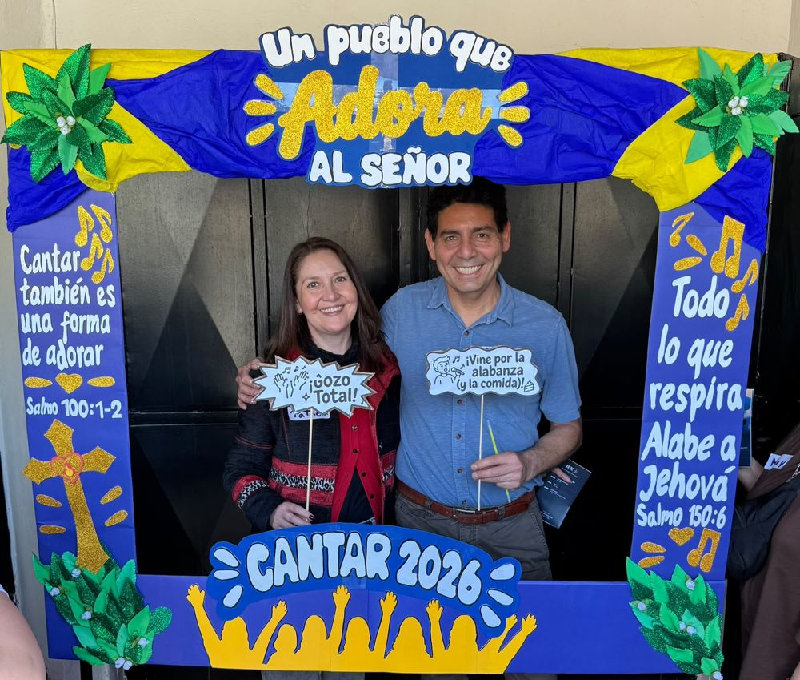
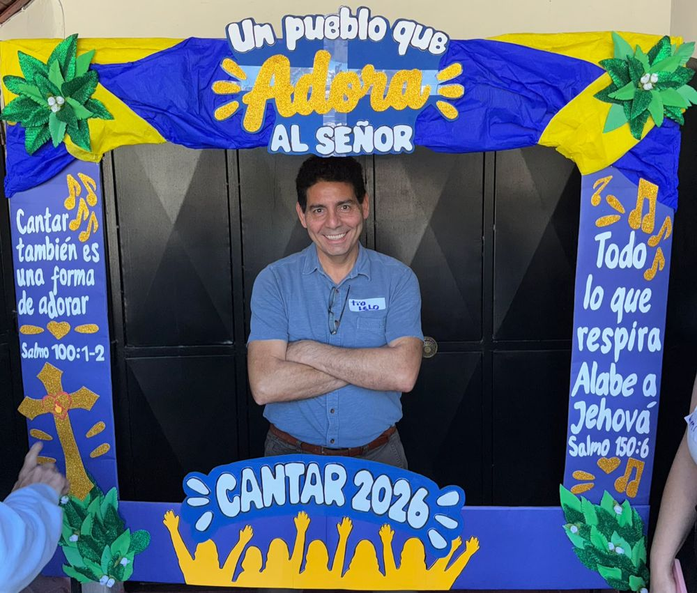
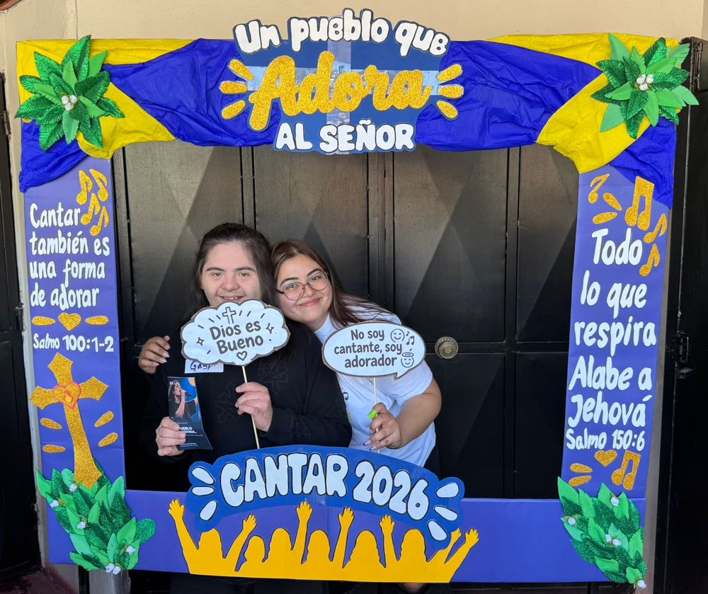
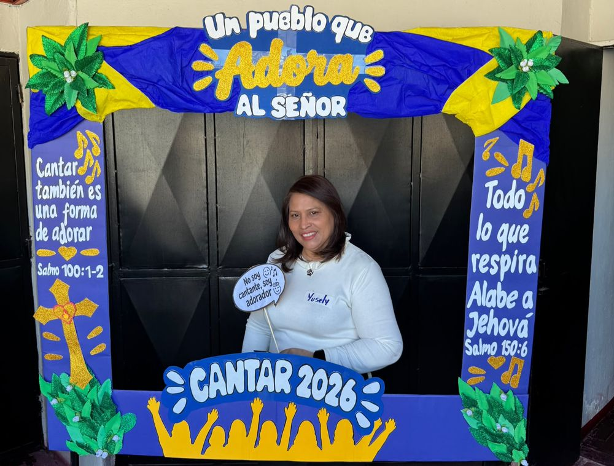
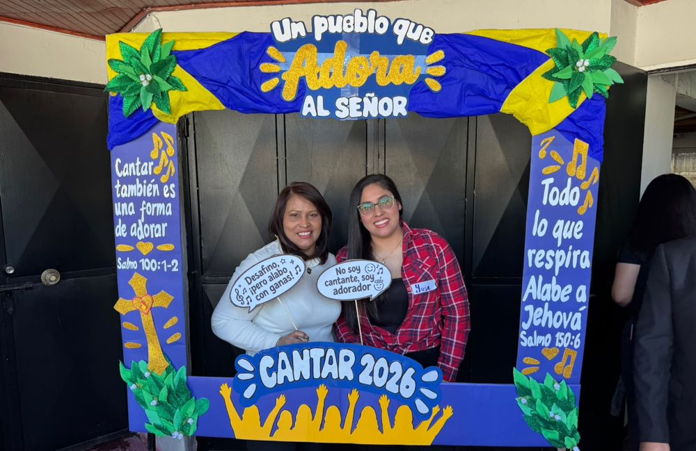
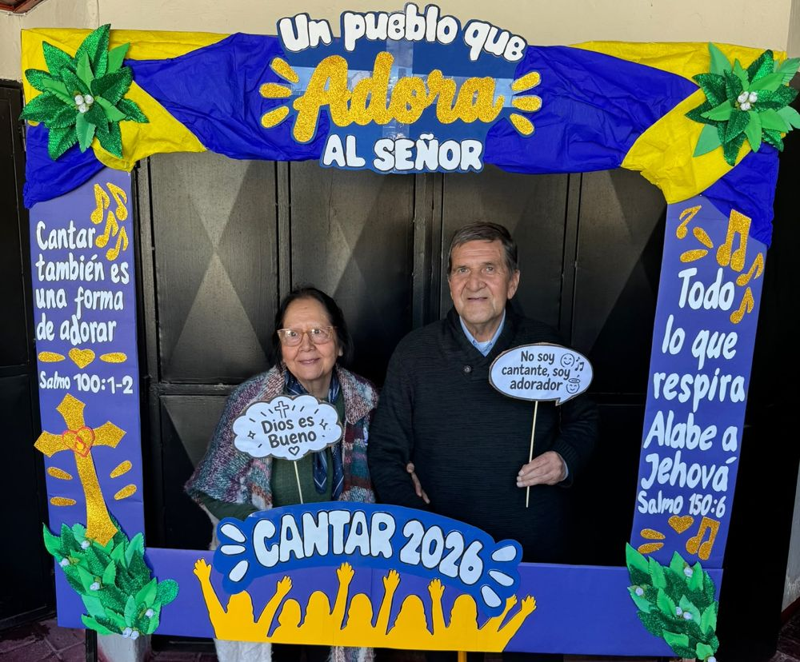
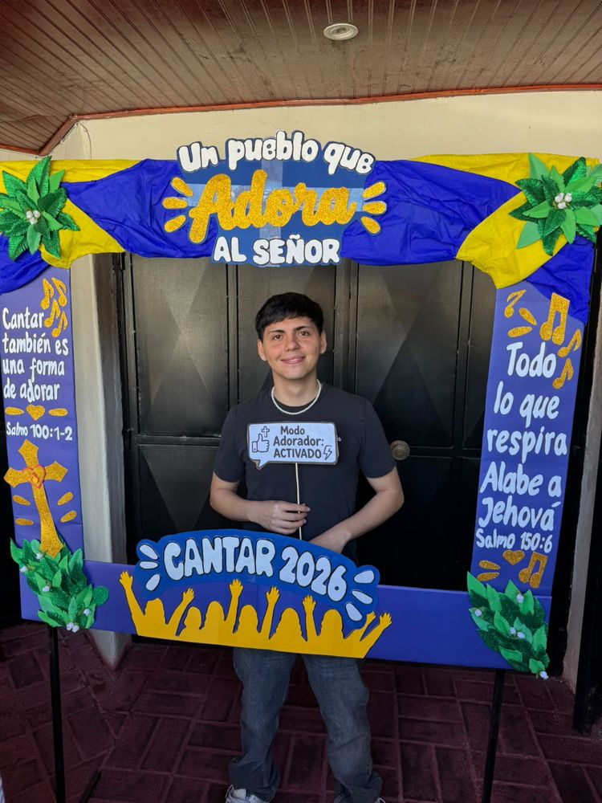
Estos son nuestros horarios de reunión.
Visítanos el domingo o escríbenos por Instagram.